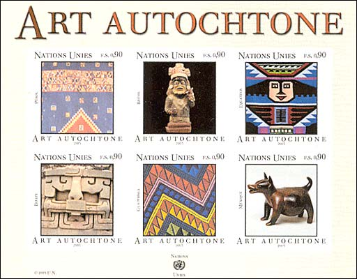
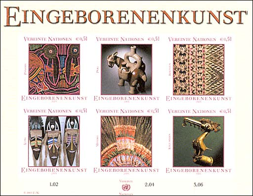
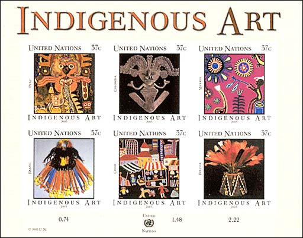
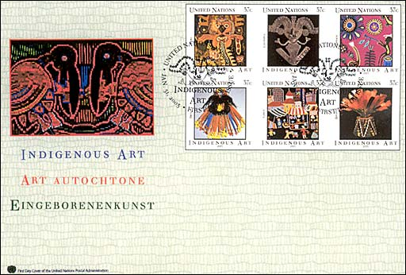

On January 31, 2003 the Postal Administration of the United Nations started a new series, dedicated to the Indigenous Art. Sets showing indigenous art from the whole world will be issued during several years. The first set covers the Latin America and Caribbean area, and it consists of three sheets of six stamps each. The stamps were designed by Rorie Katz and Robert Stein, from the United Nations. They were printed by The House of Questa (UK).

First. row. 1. Detail of a poncho, Inca
design, with geometrical patterns. South shore of Peru, 1430-1532 AD. 2.
Sitting character. Bahia-culture, Brazil, about 500 BC. 3. Blanket with a face
and geometrical patterns. Ecuador. 20th century.
Second row: 4. Maya stone sculpture from the ruins of
Xunantunich. Belize. 5. Multicolored embroidery material, Guatemala. 6. Colima
figure of a dog, from terracotta. Mexico. 500 BC - 100 AD, North Carolina
Museum of Art..

First row: 1. Mola
from Panama, with two pelicans. 2. Mochica vessel having the form of a lama.
3. Tarabuco weave, Bolivia.
Second row: 4. Masks on a marketplace in Havana, Cuba. 5.
Head emblazonment from feathers of an Aztec priest. 6. Decorated grip of a
stick. having the form of a bird. Columbia, about 1100-1600 AD.

First row: Detail of a Paravas fabric in a "linear style". Peru, 600-200 BC. David Bernstein, NY, USA. 2. Pendant having the form of a man/animal. Sinu culture, Columbia, 150-900 AD. Réunion des Musées Mationaux/Art Resource, NY, USA. 3. Hicholi Indian embroidery, Mexico. 4. Back piece of jewelry, 20th century. People of Rigpaktsa, Brazil. 5. Wool weave art, Santiago, Chile. Art Resource, NY, USA. 6. Weaved Huari hat with feathers. Bilivia, 700-1000 AD. Bowers Museum of Cultural Art.

First day Cover (one of three), issued January 31, 2003.
Notice concerning the stamps issued by the United Nations
The
postage stamps and postal stationery of the United Nations do not serve the
postal system of a
single country, as most stamps do. Instead, UN-stamps carry mail sent from the
offices of an international organization that represents many different
countries and billions of people all over the world.
The stamps of the United Nations often feature designs that
promote the world causes of peace and justice, international cooperation,
environmental and health issues, assistance for developing countries, and
similar concerns.
Most of today's United Nations stamps are issued in three
versions for three different UN-offices, New York, Geneva (Switzerland) and
Vienna (Austria). Stamps for use at the United Nations World Headquarters in New
York City are denominated in US-dollars and cents, and the postage
rates correspond with United States rates.
Stamps for use at the UN European Office (also known as
Palais des Nations) in Geneva, Switzerland,
are denominated in Swiss francs and centimes, and are inscribed with the name of
the organization in French "Nations Unies".
The third set of stamps are created for use at the UN Donaupark
Vienna International Center, or the International Atomic Energy Agency in
Vienna, Austria. These issues are denominated in EURO, and are inscribed in German "Vereinte Nationen".
The stamps of the United Nations cannot be used outside of
UN-offices. Mail bearing a stamp from the New York UN-office must be deposited
into the mail stream at UN-Headquarters on Manhattan's East Side, not in a
US-mailbox or a US-post office elsewhere in New York.
(Source: Linn's Stamp News, April 17, 2000).
Links to other Folk Art pages, by the same webmaster:
| Click the above image to visit the site | |